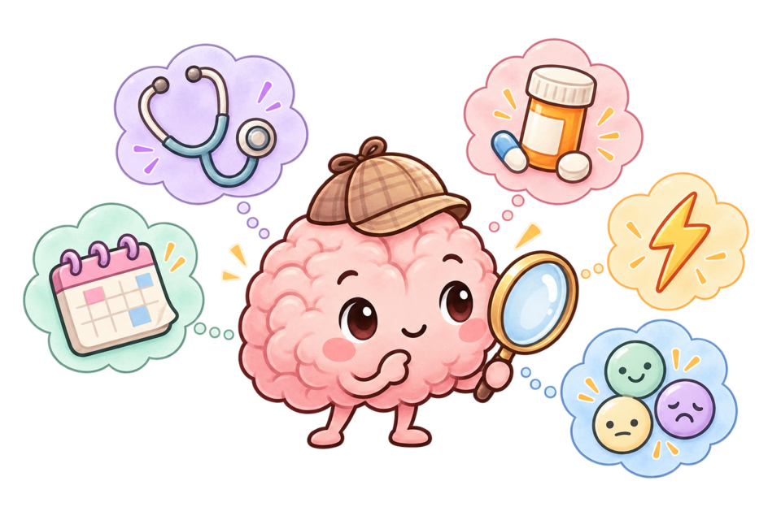
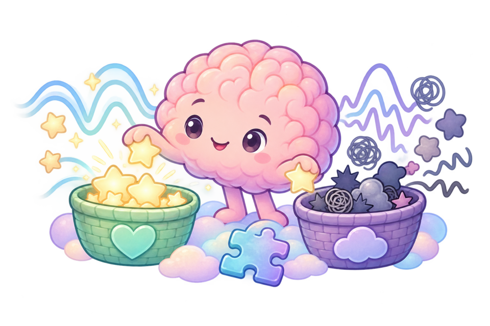

High Yield Interactive Study Guide
A syllabus-filtered review of DSM-5 diagnostic thresholds, CMDT workup and treatment, and high-yield points from the nine supplied lecture decks. Content remains limited to your approved course sources.
Disorders
“This, not that” comparison charts
Use the defining trigger, time course, and impairment pattern to separate diagnoses that look alike.
Search mode shows every comparison containing the highlighted term.
Anxiety and obsessive-compulsive disorders: diagnosis by duration and trigger
| Diagnosis | Duration | Trigger / content | Core feature |
|---|---|---|---|
| Generalized anxiety disorder (GAD) | ≥6 months | Diffuse—multiple life domains | Excessive worry that is hard to control |
| Panic disorder | Recurrent attacks plus ≥1 month of worry about more attacks or their consequences and/or maladaptive behavior change | Unexpected, discrete attacks | Peaks within minutes; fear of dying or losing control |
| Social anxiety disorder | ≥6 months | Social or performance situations | Fear of scrutiny or embarrassment |
| Specific phobia | ≥6 months | One specific object or situation | Immediate fear and active avoidance |
| Agoraphobia | ≥6 months | ≥2 of 5 setting groups, such as crowds or public transportation | Fear of being unable to escape or obtain help |
| Obsessive-compulsive disorder (OCD) | Time-consuming—typically more than 1 hour/day—or causes clinically significant distress or impairment | Content-specific obsession | Compulsion performed to reduce distress |
Attached Diagnosis table, adapted to the study-guide style; DSM-5, pp 197–226 and 237–242
Mania, hypomania, and primary psychosis
| Feature | Mania | Hypomania | Primary psychosis |
|---|---|---|---|
| Duration / severity | ≥1 week or any duration if hospitalized; marked impairment | ≥4 days; observable change without marked impairment | Use psychosis-specific duration and functional criteria |
| Sleep / activity | Decreased need for sleep plus increased energy/goal-directed activity | Same symptom cluster, but less severe | May have sleep disruption, but the mood-energy syndrome is not required |
| Psychosis | May occur and makes the episode manic | Absent by definition | Delusions, hallucinations, or disorganization are central; define their relationship to mood episodes |
Mood Disorders 2026 SV lecture deck; Psychotic Disorders 2024 lecture deck; DSM-5, pp 123–142
MDD, PDD, and PMDD
| Diagnosis | Defining time pattern | Anchor clue |
|---|---|---|
| MDD | ≥5 symptoms during the same 2 weeks | Depressed or irritable mood, or anhedonia, must be one symptom. |
| PDD | Depressed/irritable mood most days for 2 years (1 year in youth) plus ≥2 associated symptoms | Chronic course; no symptom-free interval longer than 2 months. |
| PMDD | Symptoms emerge in the final premenstrual week and become minimal after menses; confirm prospectively | Cyclical relationship, not continuous depression or simple premenstrual worsening. |
Mood Disorders 2026 SV lecture deck; DSM-5, pp 160–175
Trauma and stressor disorders
| Diagnosis | Use when… | Key separator |
|---|---|---|
| Acute stress disorder | A qualifying trauma is followed by the trauma-symptom syndrome for 3 days to 1 month. | Time-limited to the first month. |
| PTSD | Qualifying trauma plus intrusion, avoidance, negative cognition/mood, and arousal clusters lasts over 1 month. | Requires the full cluster pattern. |
| Adjustment disorder | Distress/impairment begins within 3 months of a stressor but another disorder does not fit better. | The stressor need not meet the trauma definition. |
Trauma & Stress-Related Disorders 2026 SV lecture deck; DSM-5, pp 265–290
Somatic symptoms, illness fear, neurologic symptoms, and intentional production
| Think this | Core pattern | Do not confuse with |
|---|---|---|
| Somatic symptom disorder | Distressing somatic symptom(s) plus disproportionate thoughts, anxiety, or time. | Symptoms do not have to be medically unexplained. |
| Illness anxiety disorder | Preoccupation with having or acquiring illness with absent or mild somatic symptoms. | The focus is illness fear, not a burdensome symptom syndrome. |
| Functional neurologic disorder | Motor/sensory symptom with positive clinical incompatibility with recognized disease. | Do not diagnose only because tests are normal. |
| Factitious disorder | Intentional falsification/induction without obvious external reward. | Malingering has an external incentive. |
Somatic and Dissociative Disorders 2026 SV lecture deck; DSM-5, pp 309–327; CMDT Ch 28, pp 1039–1042
Narcissistic personality disorder vs OCPD
| Feature | Narcissistic personality disorder | Obsessive-compulsive personality disorder (OCPD) |
|---|---|---|
| Core pattern | Grandiosity, need for admiration, entitlement, exploitation, envy, arrogance, and limited empathy. | Preoccupation with order, perfectionism, rules, work, and interpersonal control at the expense of flexibility and openness. |
| What drives the behavior? | Protecting a grandiose self-view and obtaining special recognition or treatment. | Making work and behavior conform to rigid standards; perfectionism may prevent task completion. |
| High-yield clue | “I am exceptional, so others should recognize and accommodate me.” | “There is one correct way to do this, and it must be done perfectly.” |
| Do not confuse | Episode-limited grandiosity suggests mania; a fixed false grandiose belief suggests psychosis. | OCPD is an enduring, often ego-syntonic personality pattern; OCD involves intrusive obsessions and/or compulsions. |
Personality Disorders Cluster B and Cluster C lecture decks; DSM-5, pp 669–672 and 678–682
Borderline vs histrionic personality disorder vs bipolar disorder
| Feature | Borderline personality disorder (BPD) | Histrionic personality disorder | Bipolar disorder |
|---|---|---|---|
| Shared appearance | Both may look emotionally expressive, attention-seeking, and interpersonally intense. Use the pattern beneath the attention-seeking to separate them. | May also appear emotionally intense or impulsive during a mood episode, but the change is episodic rather than a pervasive personality pattern. | |
| Relationship pattern | Unstable, intense relationships with abandonment sensitivity and shifts between idealization and devaluation. | Relationships may be viewed as more intimate than they are; interaction may be seductive, provocative, or theatrical. | Relationship disruption tracks a distinct manic, hypomanic, or depressive episode rather than a lifelong abandonment- or attention-centered pattern. |
| Self / affect clues | Identity disturbance, chronic emptiness, marked affective reactivity, poorly controlled anger, and stress-linked paranoia or dissociation. | Rapidly shifting, shallow emotional expression; suggestibility; impressionistic speech lacking detail. | Mania or hypomania includes a sustained change in mood plus increased energy/activity, with clues such as decreased need for sleep, pressured speech, grandiosity, and increased goal-directed activity. |
| Highest-yield discriminator | Recurrent suicidal behavior or self-injury and frantic efforts to avoid abandonment strongly favor BPD. | Pervasive discomfort when not the center of attention, without the full BPD identity/self-harm pattern, favors histrionic PD. | Look for discrete episodes lasting days to weeks and a clear change from baseline; rapid reactions to interpersonal stress alone favor BPD over bipolar disorder. |
Personality Disorders Cluster B and Mood Disorders 2026 SV lecture decks; DSM-5, pp 123–154 and 663–669
Schizoid vs avoidant personality disorder
| Feature | Schizoid personality disorder | Avoidant personality disorder |
|---|---|---|
| Shared appearance | Both may have few relationships, limited social participation, and solitary work or activities. | |
| Desire for closeness | Little desire for close relationships; typically prefers solitude and may be indifferent to praise or criticism. | Wants attachment but avoids people because of inadequacy, embarrassment, criticism, or rejection fears. |
| Emotional clue | Restricted emotional expression, coldness, or detachment. | Hypersensitivity to negative evaluation and a self-view of being socially inept or unappealing. |
| One-question shortcut | “Do you generally prefer not to have close relationships?” | “Would you want closer relationships if you felt sure you would be accepted?” |
Personality Disorders Cluster A and Cluster C lecture decks; DSM-5, pp 652–655 and 672–675
Schizotypal personality disorder vs a psychotic disorder
| Feature | Schizotypal personality disorder | Psychotic disorder |
|---|---|---|
| Core pattern | Enduring social/interpersonal deficits with odd beliefs, ideas of reference, unusual perceptions, eccentric behavior or speech, suspiciousness, and social anxiety. | Frank delusions, hallucinations, disorganized speech/behavior, catatonia, and/or negative symptoms, with the exact threshold and duration determined by the specific diagnosis. |
| Reality testing | Odd or magical ideas remain subthreshold; the lecture notes some self-awareness of being odd and incomplete disconnection from reality. | Reality testing is impaired during active delusions or hallucinations; beliefs have delusional conviction or perceptions occur without an external stimulus. |
| Course | Pervasive personality pattern beginning by early adulthood, rather than a new discrete psychotic episode. | May be episodic or continuous; apply the duration and functional criteria for brief psychotic disorder, schizophreniform disorder, schizophrenia, or another psychotic diagnosis. |
| High-yield separator | Ideas of reference and unusual perceptual experiences without sustained psychosis. | Persistent delusions, hallucinations, or clear disorganization cross into psychosis. |
Personality Disorders Cluster A lecture deck; Psychotic Disorders 2024 lecture deck; DSM-5, pp 87–122 and 655–659
Schizoaffective depressive type vs MDD with psychotic features
| Feature | Schizoaffective disorder, depressive type | Major depressive disorder (MDD) with psychotic features |
|---|---|---|
| Mood episode | A major depressive episode occurs concurrently with schizophrenia Criterion A; no manic episode is part of the illness. | A major depressive episode is present; psychotic features are specified during that episode. |
| Psychosis outside depression | Required: at least 2 weeks of delusions or hallucinations without a major mood episode during the lifetime illness. | Absent: psychosis occurs only during major depressive episodes. |
| Longitudinal rule | Mood episodes occupy most of the total active and residual illness duration. | The depressive episode defines the illness period; if psychosis persists after the full mood episode has ended, reconsider schizoaffective or another psychotic disorder. |
| Decisive history question | “Was there ever a full 2-week period of delusions or hallucinations when the patient was not in a major depressive episode?” Yes favors schizoaffective disorder. | |
Psychotic Disorders 2024 lecture deck; DSM-5, pp 105–110 and 160–168
Schizoaffective bipolar type vs bipolar disorder with psychotic features
| Feature | Schizoaffective disorder, bipolar type | Bipolar disorder with psychotic features |
|---|---|---|
| Mood episode | A manic episode occurs concurrently with schizophrenia Criterion A; major depressive episodes may also occur. | Psychosis occurs during a manic or major depressive episode. Psychosis during an elevated episode makes that episode manic, not hypomanic. |
| Psychosis outside mood episodes | Required: at least 2 weeks of delusions or hallucinations without a major mood episode during the lifetime illness. | Absent: psychosis is confined to mood episodes. |
| Longitudinal rule | Mood episodes occupy most of the total active and residual illness duration. | The episodic manic/depressive course organizes the illness; psychosis tracks the mood episodes. |
| Decisive history question | “Did prominent delusions or hallucinations continue for at least 2 weeks after the full manic or depressive syndrome was no longer present?” Yes favors schizoaffective disorder. | |
Psychotic Disorders 2024 lecture deck; DSM-5, pp 105–110 and 123–154
Presentation-first clinical approach
Use the presenting feature to open the differential before assigning a psychiatric diagnosis. The chapter repeatedly emphasizes exclusion of medical, medication, and substance causes.

| Presentation | Leading chapter-based branches | Discriminator to seek |
|---|---|---|
| Low mood, anhedonia, guilt, neurovegetative change | Major depression; bipolar depression; adjustment/bereavement; medical, medication, or substance-related mood syndrome | Past mania/hypomania, duration/severity, stressor relationship, suicidality, medication/substance timeline, thyroid/neurologic or other medical disease |
| Grandiosity, racing thoughts, agitation, little need for sleep | Mania/hypomania; stimulant intoxication; psychosis; delirium/medical condition | Goal-directed activity and mood polarity, stimulant exposure, fluctuation/inattention, neurologic or autonomic findings |
| Hallucinations or delusions | Schizophrenia spectrum; mood disorder with psychosis; substance/medication-induced state; neurologic, endocrine, infectious, or metabolic cause | Duration, relationship to mood episodes, negative symptoms, visual vs auditory phenomena, formication/stereotypy, atypical course or abnormal exam |
| Anxiety, panic, palpitations, tremor | GAD/panic/phobia; cardiovascular, endocrine, respiratory, or neurologic disease; stimulant/caffeine use; sedative or alcohol withdrawal | Trigger and time course, avoidance, substance/medication use, vital signs, withdrawal timeline, medical red flags |
| Agitation or abnormal movement | Psychosis/mania; intoxication/withdrawal; delirium; akathisia, dystonia, parkinsonism, tardive dyskinesia, or NMS | Recent drug start/dose change, inner restlessness vs involuntary movement, fever/rigidity/autonomic change, attention and orientation |
| Insomnia or hypersomnolence | Mood/anxiety/PTSD; substance or medication effect; primary insomnia; narcolepsy; sleep apnea or other medical sleep disorder | Sleep opportunity/hygiene, daytime attacks/cataplexy, breathing pauses, stimulant/sedative use, mood symptoms |
Depression screening and PHQ-9-guided initial management
PHQ-2 is a brief first-step screen; a score of 3 or more prompts further evaluation with the PHQ-9, other diagnostic instruments, or direct interview. PHQ-9 estimates symptom severity and tracks response, but the diagnosis still requires clinical assessment. Any endorsement of item 9 requires direct suicide-risk assessment.
| PHQ-9 score | Severity | Lecture-supported initial approach |
|---|---|---|
| 0–4 | None/minimal | No depression treatment solely from the score; reassess clinically when symptoms or risk factors warrant. |
| 5–9 | Mild | Watchful waiting ± psychotherapy; reassess in 2–4 weeks. |
| 10–14 | Moderate | Psychotherapy such as CBT/IPT and/or an SSRI; reassess in 4–6 weeks. |
| 15–19 | Moderately severe | Active treatment; the lecture algorithm favors medication plus psychotherapy, with follow-up in 1–2 weeks. |
| 20–27 | Severe | Immediate active treatment with medication plus psychotherapy; expedite mental-health referral for severe impairment or poor response, with follow-up in 1–2 weeks. |
Other lecture tools: Beck Depression Inventory (BDI) for depressive symptoms; Edinburgh Postnatal Depression Scale (EPDS) for postpartum patients. Screening does not replace assessment for bipolar disorder, medical/substance causes, psychosis, functional impairment, or suicide risk.
Mood Disorders 2026 SV lecture deck, slides 33–40 and 45–48
Descriptive documentation
- Thought process/form: organization inferred from speech—coherent vs topic switching, rambling, loose, or incoherent.
- Thought content: what the patient believes or thinks—delusions, obsessions, guilt/worthlessness, suicidal or homicidal ideas.
- Perception: hallucinations; the chapter defines illusions as distortions of reality.
- Affect and behavior: range/reactivity/congruence from the syllabus; observe withdrawal, agitation, self-care, motor activity, and response to stimuli.
- Cognition and safety: attention, orientation, recent memory, insight/judgment, capacity, self-harm/violence risk.
Syllabus exam domains; Ch 28, pp 1047–1049 and 1071–1072
Medical exclusion checklist
- Medication and OTC/herbal review; intoxication and withdrawal history
- Thyroid/endocrine and metabolic abnormalities, including hypoglycemia
- Seizure and other neurologic disease; infection; organ failure
- Vital signs, focused neurologic and general examination, attention/orientation
- Targeted laboratory or imaging tests based on presentation—not indiscriminate testing
Ch 28, pp 1036, 1048–1049, and 1071–1072
Observable characteristics or symptoms
Plain-language definitions for every presentation listed under this heading in the syllabus. These describe findings—not diagnoses by themselves. Use the filters to review related terms together.
Lecture pearls & mnemonics
An interactive, slide-focused layer from all eight supplied decks. Filter by lecture block. “Slide emphasis” marks content that was visually highlighted in a deck; mnemonics are study aids, not diagnostic criteria.
Rapid review
The patterns most likely to change an exam answer or an immediate management decision.
Psychosis: first fork
- Primary psychosis: auditory hallucinations, delusions, disorganized speech/behavior, negative symptoms.
- Mania: decreased need for sleep, increased goal-directed activity, and overconfidence favor bipolar illness.
- Medical/toxic: visual phenomena, abnormal neurologic findings, fluctuating cognition, recent medication/substance exposure, or atypical course increase concern.
Ch 28, pp 1047–1049
Immediate suicide assessment
- Ask directly about wish to die, ideation, intent, plan, access to means, prior attempts, and protective/inhibiting factors.
- Alcohol use, hopelessness, psychosis/delusions, and near-complete anhedonia raise concern.
- Hospitalize when suicide risk is a major consideration; involve a support person and remove lethal means when outpatient care is appropriate.
Ch 28, pp 1056–1057
Agitation or violence
- Do not threaten, touch, crowd, or allow weapons; maintain access to an exit and use calm verbal engagement.
- Look for intoxication, withdrawal, delirium, psychosis, mania, or a medical cause.
- Severe psychotic aggression may require antipsychotic treatment; benzodiazepines can be used in selected intoxication/agitation states.
Ch 28, pp 1069–1070
NMS vs serotonin syndrome
- NMS: rigidity/extrapyramidal signs, fever, altered consciousness, autonomic instability; often early after antipsychotic exposure; CK and leukocytosis may rise.
- Serotonin syndrome: mental-status change, neuromuscular hyperactivity, and autonomic hyperactivity in the setting of serotonergic drugs.
- Both are urgent drug-related syndromes: stop offending agents and provide emergency supportive management.
Ch 28, pp 1052–1053 and 1060
Opioid overdose
- Think depressed consciousness and respiratory depression; pinpoint pupils support but do not exclude the diagnosis if absent.
- Support airway/breathing and give naloxone; repeat dosing may be needed because naloxone is shorter acting than many opioids.
- Observe for recurrent respiratory depression; xylazine effects are not reversed by naloxone, but naloxone still reverses the opioid component.
Ch 48, pp 1689–1690
Alcohol withdrawal
- Usually begins 6–36 hours after the last drink and peaks at 48–72 hours.
- Severity ranges from autonomic symptoms and tremor to seizures, hallucinosis, and delirium tremens.
- Benzodiazepines are first-line; evaluate electrolytes and complications, give thiamine when indicated, and use CIWA-Ar only in an appropriate, communicative patient.
Ch 48, pp 1693–1697
When a patient endorses suicidal thoughts: follow-up questions and disposition
1. Ideation
Ask how often the thoughts occur, how long they last, and whether they are passive (“better off without me”) or active.
2. Plan
Ask whether the patient has considered a method, time, or place and how specific or prepared the plan is.
3. Intent
Ask whether the patient believes they may act on the thoughts and what has stopped them so far.
4. Means
Ask about access to firearms, medications, or other lethal means; collaboratively restrict access.
5. History
Ask about prior attempts, aborted/interrupted attempts, self-harm, recent psychiatric admission, and recent escalation.
6. Protective factors
Ask what keeps the patient going: people, responsibilities, beliefs, future plans, coping skills, and connection to care.
| Risk snapshot | Disposition from lecture |
|---|---|
| No/minimal: no ideation or fleeting thoughts without distress | Routine care with clinical reassessment. |
| Low: passive ideation, no plan or intent, strong protective factors | Outpatient care, collaborative safety plan, and close follow-up. |
| Moderate: active ideation without a specific plan; some risk factors | Urgent psychiatric referral or same-day evaluation; safety plan and means restriction. |
| High/imminent: plan and/or intent, access to means, or recent attempt | Emergency evaluation; do not leave alone; consider hospitalization. |
Structured screening: the lecture identifies the Columbia–Suicide Severity Rating Scale (C-SSRS). Use it to structure assessment, not to replace direct clinical questions or disposition based on imminent risk.
Safety plan: warning signs → internal coping → social distraction → people to ask for help → professionals/agencies (including 988 or the nearest ED) → make the environment safe. After a crisis or discharge, maintain supportive follow-up contact.
Mood Disorders 2026 SV lecture deck, slides 46 and 84–94
Psychosis and antipsychotic safety

What DSM-5 means by psychosis—and when grandiosity crosses the line
DSM-5 describes psychotic disorders through abnormalities in five domains: delusions, hallucinations, disorganized thinking/speech, grossly disorganized or abnormal motor behavior (including catatonia), and negative symptoms. In a mood episode, the clearest psychotic features are delusions or hallucinations. A delusion is a fixed belief that does not change despite conflicting evidence.
| Non-psychotic grandiosity | Psychotic grandiosity (grandiose delusion) | |
|---|---|---|
| Reality tether | Inflated self-esteem or exaggerated confidence, but the claim remains broadly possible and reality testing is substantially intact. | A fixed belief in exceptional ability, wealth, fame, identity, power, or special relationship that persists despite clear contradictory evidence. |
| Response to challenge | May argue or minimize consequences, yet can acknowledge uncertainty or modify the claim when confronted with facts. | Maintains delusional conviction despite reasonable evidence; the belief is not simply ambition, boasting, or culturally shared faith. |
| Example | “I am the best salesperson here. I only need three hours of sleep, and I can double our sales this month.” The confidence is extreme, but the achievement is possible and the patient can discuss evidence. | “I was chosen to control the world economy through my thoughts, and the governor must obey me.” The patient holds the belief as fact despite contradiction. |
DSM-5, pp 87–90 and 124–133; Mood Disorders 2026 SV lecture deck, slides 61–64
| Diagnosis | High-yield discriminator | Course |
|---|---|---|
| Brief psychotic disorder | Psychotic symptoms associated with psychological stress | < 1 month; acute onset/resolution and better prognosis |
| Schizophreniform disorder | Schizophrenia-like syndrome | > 1 month but < 6 months |
| Schizophrenia | Positive and/or negative symptoms plus marked functional decline | At least 6 months; chronic disability is common |
| Schizoaffective disorder | Mood episode plus psychosis; psychosis lingers beyond mood symptoms but not permanently | Long-term prognosis better than schizophrenia in the text |
| Delusional disorder | Fixed false beliefs with relatively preserved intellectual/occupational function; hallucinations usually absent | Social/partner function may be markedly affected |
Positive vs negative vs cognitive
Positive: hallucinations, delusions, disorganized speech; linked in the chapter to increased mesolimbic D2 activity and respond best to antipsychotics.
Negative: diminished sociability, restricted affect, poverty of speech; linked to decreased mesocortical D2 activity and respond less well.
Cognitive: executive dysfunction contributes strongly to long-term disability and is also less medication-responsive.
Ch 28, pp 1047 and 1054
First-episode workup
- Full medical evaluation; consider CT or MRI of the brain.
- Review prescribed, OTC, street, and herbal substances.
- Consider thyroid, adrenal/pituitary, seizure, infectious, metabolic, toxic, and neurologic causes.
- Stimulant psychosis often has positive symptoms with fewer negative symptoms; formication and stereotypy are clues.
Ch 28, pp 1048–1049
Movement and life-threatening adverse effects
| Problem | Recognition | High-yield response from chapter |
|---|---|---|
| Akathisia | Early restlessness, subjective need to move, pacing; can be mistaken for anxiety/worsening psychosis | Reassess dose/drug; chapter lists benzodiazepine first-line and propranolol for resistant symptoms |
| Acute dystonia | Early spasms of head/neck/tongue; torticollis, oculogyric crisis; laryngospasm is dangerous | Acute diphenhydramine, then short-term anticholinergic therapy |
| Drug-induced parkinsonism | Akinesia, masked face, festinating gait, rigidity, postural instability, pill-rolling tremor | Reduce antipsychotic when feasible; antiparkinsonian medication may be used |
| Tardive dyskinesia | Months/years; involuntary face, mouth, tongue, trunk, limb movements; early tongue/facial signs | Prevention and lowest effective dose; VMAT2 inhibitors are treatment of choice in the chapter |
| Neuroleptic malignant syndrome | Rigidity, fever, altered consciousness, autonomic instability; CK/leukocytosis may rise | Stop drug, cooling and fluids; chapter discusses bromocriptine/amantadine, dantrolene, and ECT for resistant cases |
Ch 28, pp 1052–1054
Medication map
Restricted to the syllabus medication list and what Chapters 28/48 say about those agents.
Substance use and toxidrome review
Toxicology interpretation traps
- Use testing to guide diagnosis/treatment, not punitively; obtain informed consent outside emergencies.
- Immunoassays are presumptive. Confirm unexpected results with chromatography/mass spectrometry.
- Standard opiate screens may miss fentanyl, methadone, and other synthetic opioids.
- Amphetamine immunoassays have meaningful false-positive risk; the chapter names trazodone, promethazine, bupropion, and labetalol among causes.
- A positive screen establishes exposure, not a use disorder or clinical impairment.
Ch 48, pp 1678–1680 and 1698–1699
Active recall deck
Click the card to reveal the answer. Marking “mastered” advances the saved progress counter.
Review progress tracker
Complete 15-question multiple-choice checks by diagnosis category. Your best scores and completed categories are saved in this browser; explanations appear only after submission.
My notes
Saved automatically in this browser.